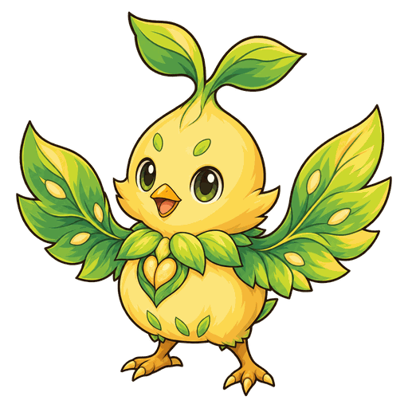
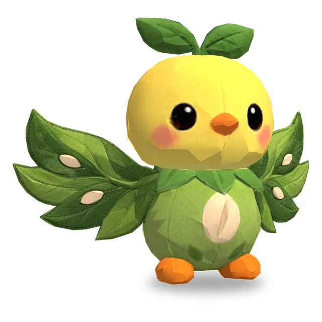
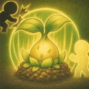

Bênção da Folha Solar
Restaura a Vida do aliado ferido com menos Vida atual a até 3 casas de distância, incluindo a si mesmo, em quantidade igual a 200% do Poder Mágico.

3D
| Lv. | Vida | Ataque | Poder mágico |
|---|---|---|---|
| 1 | 300 | 20 | 20 |
| 2 | 345 | 23 | 23 |
| 3 | 397 | 26 | 26 |
| 4 | 456 | 30 | 30 |
| 5 | 525 | 35 | 35 |
| 6 | 603 | 40 | 40 |
| 7 | 694 | 46 | 46 |
| 8 | 798 | 53 | 53 |
| 9 | 918 | 61 | 61 |
| 10 | 1055 | 70 | 70 |
| 11 | 1214 | 81 | 81 |
| Lv. | Vida da árvore |
|---|---|
| 1 | 450 |
| 2 | 518 |
| 3 | 595 |
| 4 | 684 |
| 5 | 787 |
| 6 | 905 |
| 7 | 1041 |
| 8 | 1197 |
| 9 | 1377 |
| 10 | 1583 |
| 11 | 1821 |
Vida, Ataque e Poder mágico aumentam 15% a cada nível (até o Lv.11).
No.016
Cura o aliado ferido com menos Vida atual, incluindo a si mesmo, e continua dando escudo a todos os aliados ao redor da árvore que planta na sua casa inicial.
Restaura a Vida do aliado ferido com menos Vida atual a até 3 casas de distância, incluindo a si mesmo, em quantidade igual a 200% do Poder Mágico.

No início da batalha, planta uma semente na sua casa inicial e recua para a casa vizinha mais longe do inimigo. A semente ocupa essa casa, tem Vida igual a 150% da Vida Máxima de quem a plantou e pode ser atacada e quebrada pelos inimigos. Após 5 s, a semente vira uma árvore e dá a todos os aliados num raio de 1 casa ao redor dela um escudo igual a 70% do Poder Mágico de quem a plantou no início da batalha, por 4 s; depois disso, dá o escudo de novo a cada 3 s. Se a árvore for quebrada, não dá mais escudos. A árvore continua de pé mesmo que quem a plantou tenha sido derrotado.